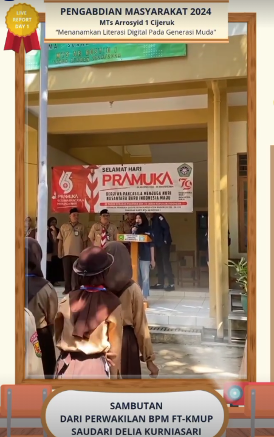

Profil Organisasi
IMATIKA FTKMUP merupakan organisasi mahasiswa yang menjadi wadah bagi mahasiswa Program Studi Informatika untuk mengembangkan kemampuan, pengalaman organisasi, dan kerja sama.


Program Kerja
IMATIKA FTKMUP memiliki beberapa program yang bertujuan untuk meningkatkan kemampuan akademik dan nonakademik mahasiswa.
Kegiatan Organisasi
- Seminar Teknologi
- Workshop Pemrograman
- Pelatihan Desain
- Kegiatan Sosial
Alur Pendaftaran Anggota
- Mengisi formulir pendaftaran
- Mengikuti seleksi
- Mengikuti wawancara
- Mengikuti kegiatan pengenalan organisasi
Informasi Organisasi
- Nama
- IMATIKA FTKMUP Universitas Pancasila
- Fakultas
- Fakultas Teknik
- Program Studi
- Informatika
- Bidang
- Teknologi dan Pengembangan Mahasiswa
Media dan Kontak
Informasi mengenai kegiatan organisasi dapat diakses melalui Instagram atau melalui email organisasi.